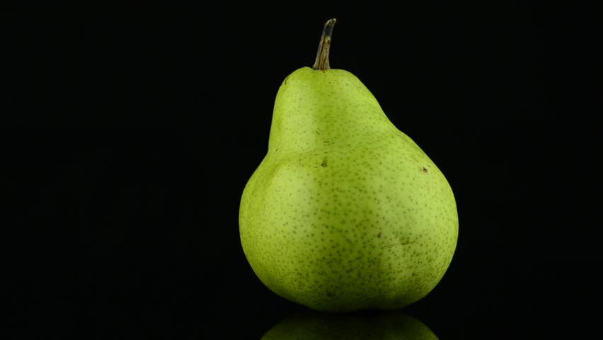

Pear

- Pears are sweet, bell-shaped fruits that have been enjoyed since ancient times. They can be eaten crisp or soft.
- Pears come in many different varieties. Bartlett, Bosc, and D’Anjou pears are among the most popular, but around 100 types are grown worldwide.
- Pears are likewise a rich source of important minerals, such as copper and potassium. Copper plays a role in immunity, cholesterol metabolism, and nerve function, whereas potassium aids muscle contractions and heart function.
- Pears are an excellent source of soluble and insoluble fiber, which are essential for digestive health. These fibers help maintain bowel regularity by softening and bulking up stool.
- Additionally, soluble fibers feed the healthy bacteria in your gut. As such, they’re considered prebiotics, which are associated with healthy aging and improved immunity.
- Pears offer many beneficial plant compounds that give these fruits their different hues. For instance, anthocyanins lend a ruby-red hue to some pears. These compounds may improve heart health and strengthen blood vessels.
- Though specific research on pear anthocyanins is needed, numerous population studies suggest that a high intake of anthocyanin-rich foods like berries is associated with a reduced risk of heart disease.
- Pears with green skin feature lutein and zeaxanthin, two compounds necessary to keep your vision sharp, especially as you age.
- Although inflammation is a normal immune response, chronic or long-term inflammation can harm your health. It’s linked to certain illnesses, including heart disease and type 2 diabetes.
- Pears are a rich source of flavonoid antioxidants, which help fight inflammation and may decrease your risk of disease.
- Pears contain various compounds that may exhibit anticancer properties. For example, their anthocyanin and cinnamic acid contents have been shown to fight cancer.
- A few studies indicate that diets rich in fruits, including pears, may protect against some cancers, including those of the lung, stomach, and bladder.